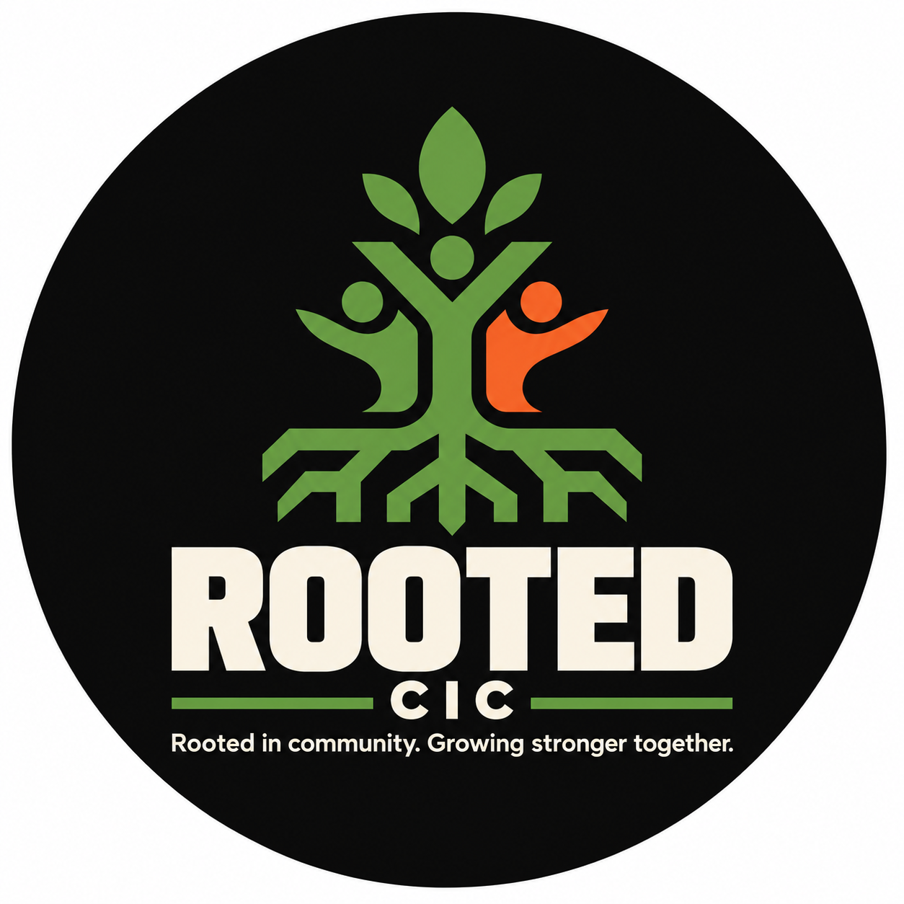
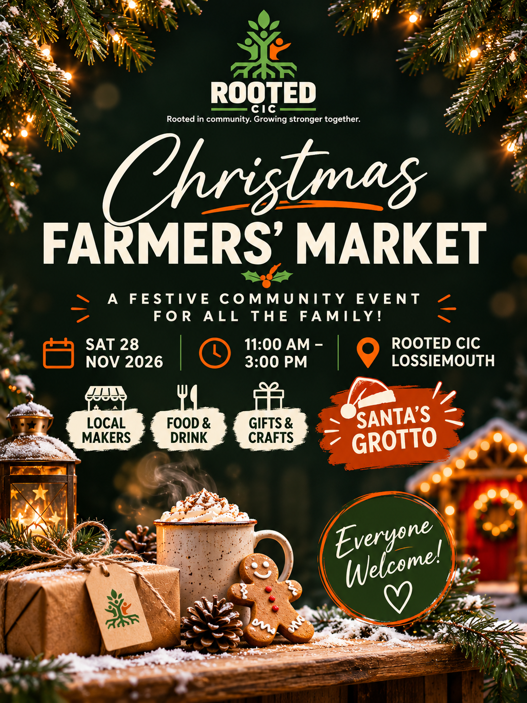
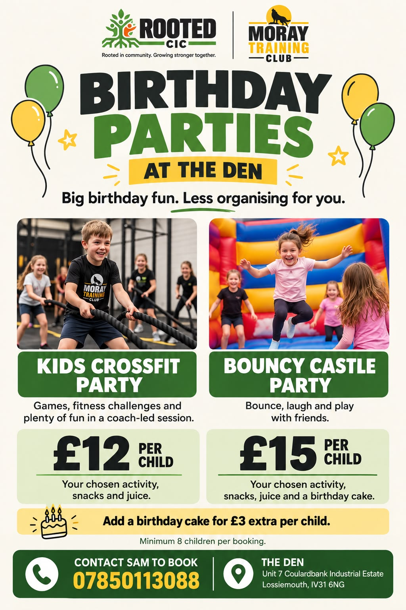

🤝
Connection
Bringing people together and creating a sense of belonging.
Rooted in community. Growing stronger together. We're creating welcoming spaces, meaningful connections and new opportunities for people across Lossiemouth and Moray.

Rooted CIC is a community interest company based in Lossiemouth, working to improve wellbeing, reduce isolation and create opportunities for people to thrive.
We work alongside Moray Training Club, while operating as a separate organisation. Through The Den, community activities, partnerships and practical support, we're helping build a more connected Moray.
See what we're building ↗Our values shape how we welcome people, create opportunities and work with our community.
Bringing people together and creating a sense of belonging.
Supporting mental, physical and social wellbeing in everyday life.
Helping people learn, participate, build confidence and grow.
Creating welcoming, accessible activities for different needs and backgrounds.
Listening locally and working with people, not just for them.
Making a meaningful difference and learning from what works.
From coffee and conversation to new skills and wellbeing support, we're growing a programme shaped by our community.
A welcoming community café and gathering space for conversations and connection.
Informal sessions and guest speakers exploring wellbeing, recovery and everyday health.
Creative activities that bring people together, encourage new skills and reduce isolation.
Community learning, business conversations and practical opportunities to develop.
Developing opportunities to connect with Moray's outdoors and coastline.
Seasonal markets, workshops and celebrations that support local people and businesses.
There's always room for one more at Rooted. Here's what's coming up and what's taking shape.

Celebrate local makers, food, gifts and festive community spirit. Bring the family, discover independent businesses and enjoy a welcoming day out in Lossiemouth.
Local business interested in a stall? We're inviting stallholders with a minimum £10 donation per stall.
Ask about the market ↗Friendly conversations, wellbeing speakers, coffee and community connection. Check upcoming dates before travelling.
Relax, create and meet new people. Session details and booking information to be published.
Practical business learning and support for people building ideas and skills.
Explore Rooted's community events, workshops and opportunities. Tap any poster for a closer look.





These are our proposed 12-month targets — the outcomes we're working towards, not results already achieved.
Rooted grows through the generosity, energy and ideas of our community. Whether you're a local business, volunteer or supporter, you can help.
Share expertise, sponsor a programme or collaborate on community activities.
Support events, help us reach more people or volunteer your skills.
Help fund accessible sessions, community equipment and improvements to our spaces.
Want to collaborate, volunteer, support a programme or ask about an event? We'd love to hear from you.
Based in: Lossiemouth, Moray, Scotland.
We haven't published an email address or online enquiry form here until Rooted's official contact details are confirmed. Add your approved email, phone number or booking link before launching.
For event bookings: The Organised Types OS Store integration is planned and will be connected once the approved store URL and booking flow are available.
Back to top ↑